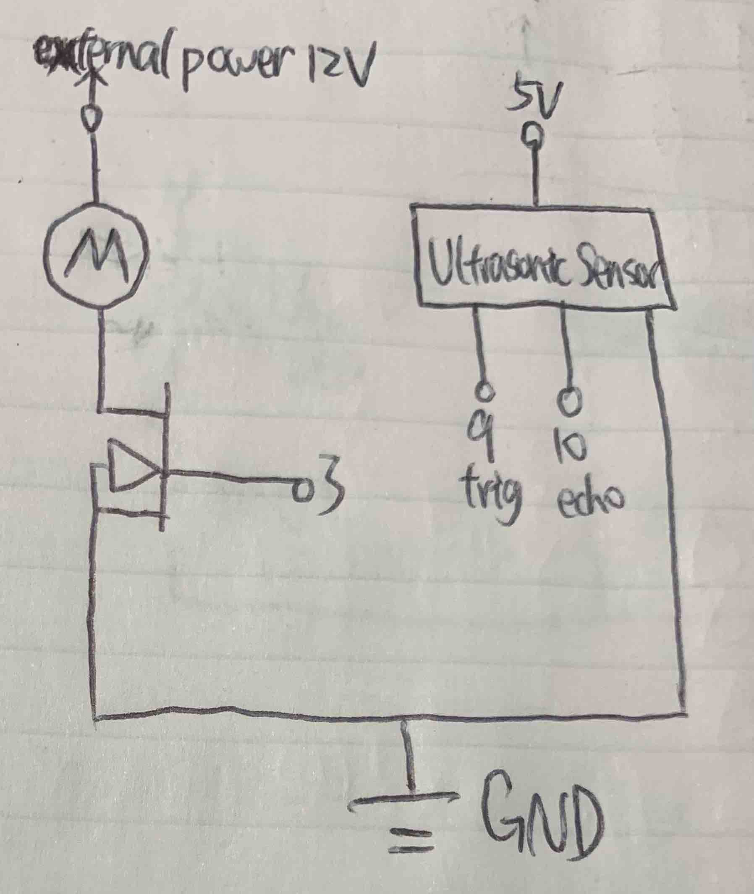

Cheng's Assignment 6 - Talking to the Web!

This is my schematic for the Higher Voltage and Transistors assignment.

This is my circuit for the Higher Voltage and Transistors assignment.
// Cheng Guo
// HCDE 439 - HW 5
// Reference 1: https://datasheet.octopart.com/711-Adafruit-Industries-datasheet-34099108.pdf
// initialize motor and ultrasonic sensor
int motor = 3; // initialize the motor on pin 3
int trig = 9; // intialize the trig pin of the ultrasonic sensor on pin 9
int echo = 10; // intialize the echo pin of the ultrasonic sensor on pin 10
float duration; // initialize a range for receiving a pulse
float distance; // initialize a value for calculating the distance
int shortDelay = 5; // wait for 5 milliseconds
int longDelay = 500; // wait for half a second
// the setup routine runs once when you press reset:
void setup() {
// initialize serial communication at 9600 bits per second:
Serial.begin(9600);
// initialize digital pins as input and outputs.
pinMode(motor, OUTPUT); // initialize the motor on pin 3
pinMode(trig, OUTPUT); // intialize the trig pin of the ultrasonic sensor on pin 9
pinMode(echo, INPUT); // intialize the echo pin of the ultrasonic sensor on pin 10
}
// the loop routine runs over and over again forever:
void loop() {
// Adjust the trig pin before receiving pulse
digitalWrite(trig, LOW); // adjust the trig pin before receiving pulse
delay(shortDelay); // wait for 5 milliseconds
digitalWrite(trig, HIGH); // adjust the trig pin before receiving pulse
delay(shortDelay); // wait for 5 milliseconds
digitalWrite(trig, LOW); // adjust the trig pin before receiving pulse
// Receiving pulses and calculating distance
duration = pulseIn(echo, HIGH); // receiving the pulse from the echo pin
distance = (duration * .0343) / 2; // calculating the distance based on the pulse received
Serial.print("Distance: "); // print the distance to the serial monitor
Serial.println(distance); // print the distance to the serial monitor
// Adjust the value of distance to make the motor spin
int distance_constrained = constrain(distance, 10, 1000); // constrain the distance to 10 and 1000
int distance_mapped = map(distance_constrained, 10, 1000, 0, 100); // map the constrained distance to 0 and 100
analogWrite(motor, distance_mapped); // write value to the motor to make it spins
delay(longDelay); // wait for half a second
}
This is my code for the Higher Voltage and Transistors assignment. When some object comes close to the ultrasonic sensor, The motor spins faster. Otherwise the motor stops. I used an ultrasonic sensor, and according to the professor, I do not need library.
This is my circuit's operation for the Higher Voltage and Transistors assignment.
My Calculation
Based on the information from my reference 1: https://datasheet.octopart.com/711-Adafruit-Industries-datasheet-34099108.pdf, when the power is 6V, the loaded current is 250mA max, and the stall current is 500mA max. So, when the power is 12V, the max loaded current should be 500mA, and the max stall current should be 1A, and both of them are smaller than the transistor's max current 32A, so we are safe.